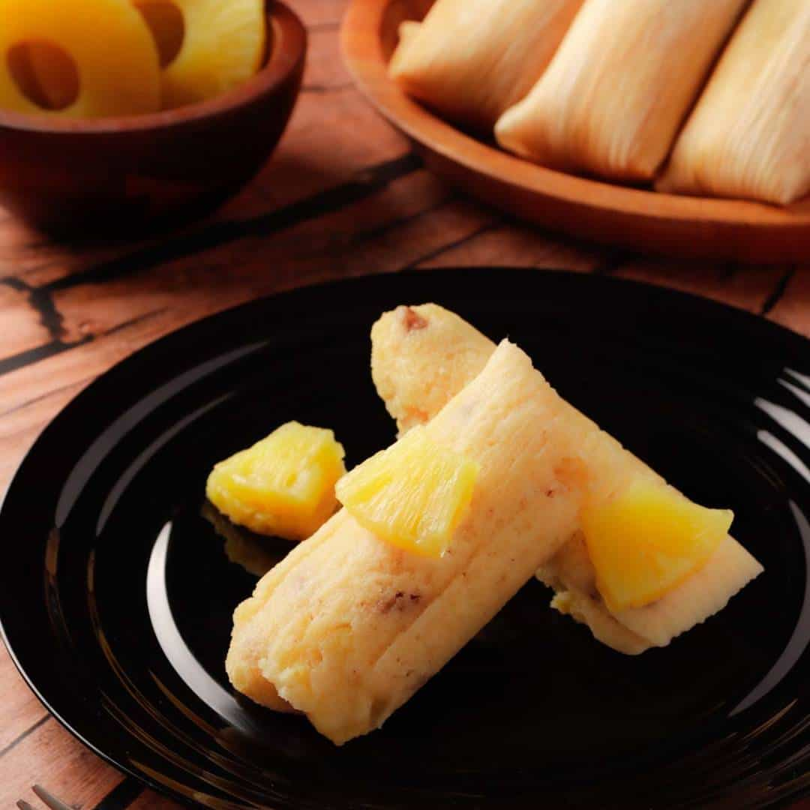

Sweet Pineapple Tamales Recipe

Description
This is an authentic sweet tamale recipe (tamales dulces de pina) with canned pineapple,
butter, and shortening in the masa dough. They taste delicious and will melt in your
mouth.
Ingredients
- corn husks
- 2 pounds of fresh corn masa dough
- 1/2 teaspoons warm water, or as needed
- 1 cup unsalted butter, at room temperature
- 1 cup vegetable shortening, at room temperature
- 1 cup white sugar
- 1 can pineapple, drained and finely chopped
Directions
- Place corn husks in a bowl, cover with boiling water, and soak for 30 to 60
minutes. Drain, place on a work surface, and cover with a clean, damp towel.
-
While corn husks are soaking, combine masa dough, baking soda, and water in a
bowl. Knead until dough has a smooth and even consistency, adding more water, 1
teaspoon at a time, as needed. Take care not to add too much water.
-
Beat butter, vegetable shortening, and sugar together in a second bowl with an
electric mixer until smooth and creamy. Slowly add masa dough and knead until
mixture has a uniform consistency. Mix in chopped pineapple.
-
Spread about 1 tablespoon masa mixture onto a corn husk. Fold the bottom of the
husk over the filling, then fold sides of husk together, one over the other. Finally fold
the top of the husk into the tamale, making a little package. Repeat with remaining husks.
-
Place a steamer insert into a saucepan and fill with water to just below the
bottom of the steamer. Bring water to a boil, then reduce heat to medium low.
Add tamales with the open side up and cook covered until filling is heated
through and separates from the husk, about 1 hour.